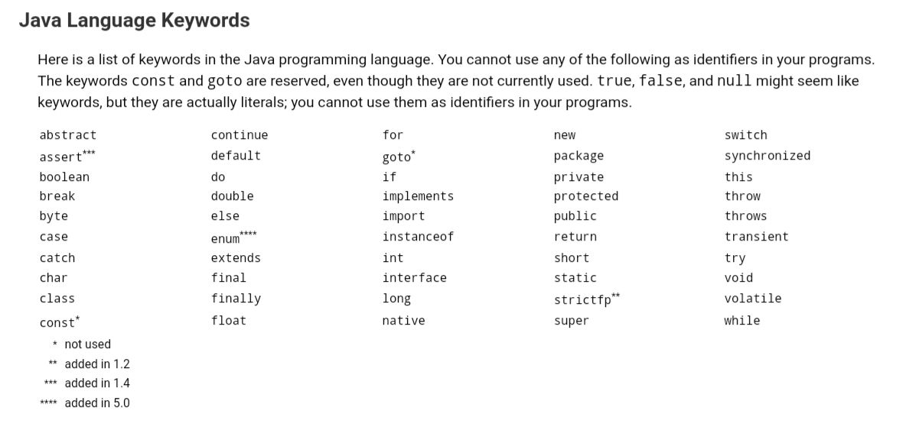

一.学习路线
- 前置
- Java SE
- Java EE
- 框架-项目
- 扩展高级的应用
二.认识Java
1995年5月23日Java诞生
JDK(Java Develop Kit)
JRE(Java Run Environment)
三.Java技术特点
简单性
(1)Java与C++的风格类似。
(2)Java比C++简单,没有头文件、指针等。
(3)提供了丰富的类库,方便程序的开发。面向对象的语言
万物皆对象
oo编程 Oriented Object一种与平台无关的语言
(1)测试代码
创建一个文件Study01.java1
2
3
4
5public class Study01{
public static void main(String[] args){
System.out.print("Hello World");
}
}(2)运行代码
Win+R打开CMD 切换到java文件所在目录,执行以下代码1
2javac Study01.java
java Study01(3)程序运行过程
Java源程序 –> Compiler编译成 .class的文件 –> JVM(Java Virtual Machine) 解释(interpreter),翻译到不同平台健壮性和安全性
(1)删除了指针和释放内存,避免了非法内存操作
(2)垃圾回收机制多线程
四.Java要求
- 源文件取名要求
只能以英文字母开头,第二位开始可以是数字
开头的字母要大写
每个单词开头的字母要大写
五.C/S和B/S项目区分
C代表Client B代表Browser S代表Server六.Java标识符
- 什么是标识符?
计算机中特殊的表示方式，代表某一些含义 - Java标识符命名规定
(1).可以是英文字母(A-Z a-z) 美元符($) 下划线()开始
(2).首字符之后可以是数字 英文字母(A-Z a-z) 美元符($) 下划线()的任意字符组合
(3).Java标识符大小写敏感, Hello 与 hello 是不同的
(4).长度无限制,长度不要太长
(5).关键字不可以做标识符 - Java标识符命名规定
(1).驼峰命名法
(2).类的名字: 每一个单词的首位字母大写
(3).见名知意, 名字的命名尽量表示功能和含义
七.数据类型
数字类型
(1).整数 8位 16位 32位 64位
(2).小数 32位 64位
小数的默认类型为double如 123.4561
2
3
4
5
6
7
8
9
10
11
12
13
14
15
16public class Study01 {
public static void main(String[] args) {
// 8位 byte
byte b = 0;
// 短整型
short s = 1234;
// 32位 标准整型
int i = 123;
// 64位 长整型
long l = 123456789L;
// 32位 单精度浮点型
float = 123.45f;
// 64位 双精度浮点型
double = 123456.789d;
}
}字符类型
(1).单个字符char1
2
3
4
5
6
7
8
9
10
11public class Study02 {
public static void main(String[] args) {
char ch = '啊';
System.out.println("char类型的ch的值为: " + ch);
//整数转字符
int i = 'a';
System.out.println("int类型的i的值为: " + i);
char ch01 = 97;
System.out.println("char类型的ch01的值为: " + ch01);
}
}
八.转义字符
转义字符是用来表示控制字符和特殊字符,它由一个反斜杠开头’'后面跟上一个字符
1 | char c = '\\'; |
九.各种类型默认值
| 基本数据类型 | 位数 | 默认值 |
|---|---|---|
| byte | 8 | 0 |
| short | 16 | 0 |
| int | 32 | 0 |
| long | 64 | 0 |
| float | 32 | 0.0 |
| double | 64 | 0.0 |
| char | 16 | /u0000 |
| boolean | 1 | false |
1 | public class Study03 { |
十.变量命名规范
- 什么是变量？
变量是指没有固定的值，可以改变的数，存储信息(数据)的容器 - 变量三要素
数据类型: 决定了内存中分配的空间
变量名: 空间别名
值: 空间中存储的数据 - 变量命名的规范
(1).见名知意
(2).第一个单词首字母小写
十一.什么是常量?
1.final修饰的变量为常量，不可修改
2.常量的变量名为全大写
3.常量的变量名为多个单词时，使用下划线分割
1 | public final static double PI = 3.1415926535; |
练习题
1.输入一整数作为秒数，在控制台按小时，分钟，秒的格式输出(如输入600，页面显示：0小时10分0秒)
1 | public void printTime(){ |
2.输入一整数，在控制台按倒序的格式输出(如输入2019，页面显示：9102 )
1 | public void reverse{ |